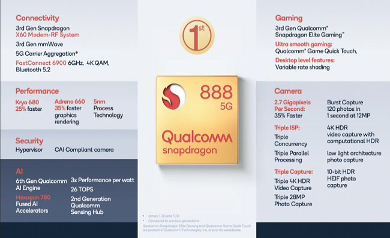
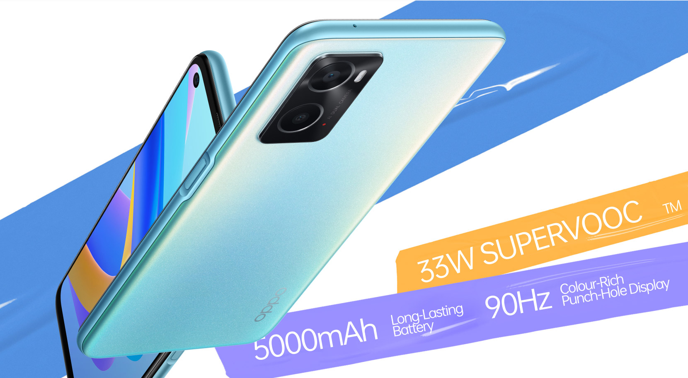
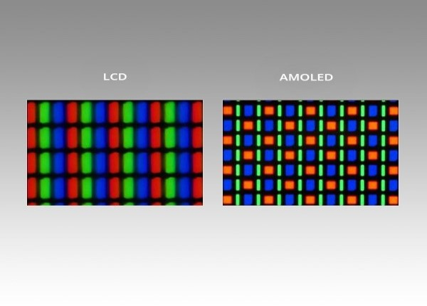
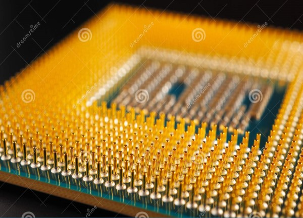

Procesadores De maxima calidad
procesadores de oro y metal fundidos los cuales poseen transistores de mayor velocidad y ahorro energético, de ahí que se obtengan rendimientos un 27% mayores y se reduzca el consumo un 40% menos que los procesadores con transistores de 14 nanómetros.

Durabilidad en uso de baterias
la batería es una unidad de almacenamiento de energía que va siendo liberada en función de las necesidades del teléfono. A su vez, para que podamos saber cuánta cantidad de electricidad que tiene, medimos cuántos electrones pasan por un determinado punto en un tiempo específico,estos equipos exprimen al maximo la bateria incorporada, por lo cual ayuda a largas horas de uso del mismo mobile.

Pantallas con tecnologia AMOLED
Un dispositivo AMOLED consiste en un conjunto de píxeles OLED que se depositan o integran en una serie de transistores de película fina (TFT) para formar una matriz de píxeles, que se iluminan cuando han sido activados eléctricamente, controlados por los interruptores que regulan el flujo de corriente que se dirige a cada uno de los píxeles. El TFT continuamente regula la corriente que fluye por cada uno de los píxeles, para así caracterizar el píxel con el nivel de brillo que mostrará.

Procesadores De alta fidelidad y durabilidad
Existen varios tipos de procesadores Snapdragon, con distintas capacidades, los cuales se pueden agrupar según la gama del teléfono:Gama alta los Snapdragon de la serie 800.,Gama media los Snapdragon de la serie 600 y 700.,Gama baja o de entrada los Snapdragon de la serie 400 o de menor generación